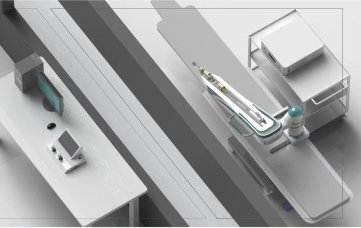

Commercial and clinical-stage systems · ydhbns01_yidu2020
VAS HERO
YDHB-NS01 / VAS HERO

1 / 3


- Family
- Commercial and clinical-stage systems (commercial)
- Devices
- 0.035-in guidewire + 5F catheter
- Degrees of freedom
- catheter advance+rotate, wire advance
- Push
- Linear stage
- Twist
- Not reported
- Tested up to
- Human
- Sim-to-real
- None found — No simulation-trained controller found for this robot.
Testing
- Highest level
- Human
- What was tested
- RCT 260 enrolled/257 done, 3 centres (liu2024_efficacy); 25+25 (liu2026_clinical)
- Key numbers
- success 100% both; operation time 47.94+-27.49 vs 48.59+-25.60 min (liu2024_efficacy); 27 vs 38 min p=0.005 (liu2026_clinical)
Mechanism
- Push (translation)
- linear-stage+clamp
- Twist (rotation)
- catheter carriage on linear axis; wire clamp-and-relay
- Device range
- N.R.
- Target anatomy
- neurovascular (cerebral angiography)
Sensing and interface
- Force sensing
- N.R.
- Leader and haptics
- no (steering handles, doctor console)
- Imaging
- bedside slave + remote console
- Sterility
- N.R.
Size
- Footprint (mm)
- N.R.
- Mass (kg)
- N.R.
Simulation
- Simulation model
- none found
- Sim-trained controller
- none found
Versions
- Lineage
- YDHB-NS01; v2.0 mentioned
Sources
- Efficacy and safety of a neurointerventional operation robotic assistance system in cerebral angiography · Stroke and Vascular Neurology, 2024 · doi:10.1136/svn-2022-002260 [liu2024_efficacy]
- Clinical validation and literature review of robot-assisted cerebral angiography · Chinese Neurosurgical Journal, 2026 · doi:10.1186/s41016-026-00426-w [liu2026_clinical]
Notes
- Notes
- NMPA Class III approval 2023-03-13 per cn-healthcare.com 2023-04-28 (named 易度河北, product VAS HERO). CONFLICT: other press attributes the first NMPA approval (2023-03-14, 260-pt, 100% success) to Beijing Wansi (万思) Medical; the 260-pt 3-centre trial matches liu2024_efficacy (YDHB-NS01), so Wansi attribution looks like a mix-up; unresolved without the NMPA database.
This record
- Read level
- full — full text on disk
- Picture
- liu2024_efficacy Fig. 2(B), PMC image https://cdn.ncbi.nlm.nih.gov/pmc/blobs/ca6f/11221321/099807b86682/svn-2022-002260f02.jpg (https://pmc.ncbi.nlm.nih.gov/articles/PMC11221321/) ↗ — licence: CC BY-NC 4.0; grade C
- Picture changes
- cropped (422,0)-(783,228) of 783x574
- Found by
- commercial: Search of commercial and clinical-stage systems.
- Data
- JSON · YAML:
records/robots/ydhbns01_yidu2020.yaml - Correction
- Suggest a correction [repository not created yet]